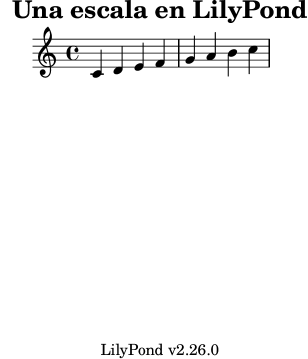

[ << Ejecución de lilypond-book ] | [Top][Contents][Index] | [ Programas externos >> ] |
[ < Ejecución de lilypond-book ] | [ Up: Ejecución de lilypond-book ] | [ Integrar música y texto > ] |
3.1 Un ejemplo de documento musicológico
Ciertos textos contienen ejemplos musicales. Son tratados musicales, cancioneros o manuales como este mismo. Estos textos se pueden hacer a mano, importando simplemente una imagen en formato PostScript o PDF en el editor de textos. Sin embargo, hay un procedimiento automático para reducir la carga de trabajo que esto implica los documentos de HTML, LaTeX, Texinfo y DocBook.
Un guión ejecutable llamado lilypond-book extrae los
fragmentos de música, les da formato y vuelve a poner en su lugar
la partitura resultante. A continuación presentamos un pequeño
ejemplo de su utilización con LaTeX. El ejemplo contiene
también texto explicativo, por lo que no vamos a comentarlo
posteriormente.
Entrada
\documentclass[a4paper]{article}
\begin{document}
Los documentos para \verb+lilypond-book+ pueden mezclar libremente
música y texto. Por ejemplo:
\begin{lilypond}
\relative {
c'2 e2 \tuplet 3/2 { f8 a b } a2 e4
}
\end{lilypond}
Se pueden añadir también opciones para controlar la apariencia de
los fragmentos. Por ejemplo,
\begin{lilypond}[fragment,quote,staffsize=26,verbatim]
c'4 f16
\end{lilypond}
Los fragmentos más grandes se pueden grabar en archivos separados.
Por ejemplo,
\lilypondfile[quote,noindent]{screech-and-boink.ly}
(Si es necesario, sustituya \verb+screech-and-boink.ly+ por
cualquier archivo \verb+.ly+ situado en el mismo directorio que
este archivo.)
\end{document}
Procesado
Guarde el código anterior como un archivo llamado lilybook.lytex, y luego ejecute en un terminal:
> lilypond-book --output=out --pdf lilybook.lytex
lilypond-book (GNU LilyPond) 2.26.0
Leyendo 'lilybook.lytex'...
…montañas de mensajes suprimidos…
Escribiendo 'out/lilybook.tex'...
> cd out
> pdflatex lilybook
This is pdfTeX, ...
(./lilybook.tex
…montañas de mensajes suprimidos…
Salida escrita en lilypond.pdf, ...
> xpdf lilybook
(sustituya xpdf por su visor de PDF favorito)
La ejecución de lilypond-book y latex crea un
gran número de archivos temporales, que podrían abarrotar el
directorio de trabajo. Para poner remedio a esto, utilice la
opción --output=directorio para crear los archivos
en un subdirectorio aparte directorio.
Dadao que este tutorial está escrito en Texinfo, no podemos mostrar directamente la salida de LaTeX del ejemplo. Sin embargo, en el siguiente apartado podemos ver una aproximación del resultado, al menos en lo que se refiere a la estructura.
Así acaba la sección del tutorial.
Salida
Los documentos para lilypond-book pueden mezclar
libremente música y texto. Usando la sintaxis de Texinfo, este
ejemplo
@lilypond
\relative {
c'2 e2 \tuplet 3/2 { f8 a b } a2 e4
}
@end lilypond
produce
![[image of music]](../10/lily-a2765133.png)
Se pueden añadir también opciones para controlar el aspecto de los fragmentos. Usando la sintaxis de LaTeX, este ejemplo
\begin{lilypond}[fragment, quote, staffsize=26]
c'4 f16
\end{lilypond}
produce
![[image of music]](../cd/lily-645c81c5.png)
Los ejemplos grandes se pueden grabar en archivos separados. Usando la sintaxis del HTML, este ejemplo
<lilypondfile quote noindent> snippets/screech-and-boink.ly </lilypondfile>
produce
![[image of music]](../19/lily-6611ce84.png)
Si se requiere un campo tagline, ya sea predeterminado o
personalizado, el fragmento completo se debe incluir dentro de una
construcción \book { }.
\book { \header { title = "Una escala en LilyPond" } \relative { c' d e f g a b c } }

[ << Ejecución de lilypond-book ] | [Top][Contents][Index] | [ Programas externos >> ] |
[ < Ejecución de lilypond-book ] | [ Up: Ejecución de lilypond-book ] | [ Integrar música y texto > ] |